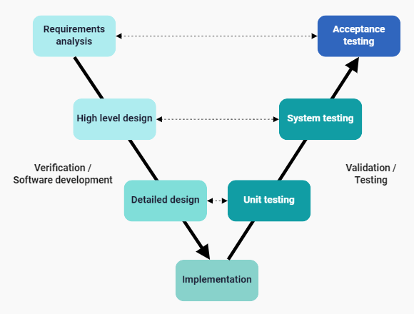

V-Shape ehk V-mudel
V-mudel on tarkvaraarenduse protsessimudel, milles on arendamine ja testimine omavahel rangelt seotud.
Mudeli nimi tuleneb selle V-tähele sarnanevast diagrammikujutisest, mis moodustub arendus- ja testimis-
faasidest. V-mudel on traditsioonilise kosk-mudeli edasiarendus, kus on olulisel kohal testimise planeerimine
juba arendusprotsessi alguses.
V-mudeli etapid
V-mudel koosneb kahest peamisest harust:
- Vasak haru ehk arendusetapid: sisaldab nõuete analüüsi, süsteemi-, arhitektuuri- ja detailset disaini
ning kodeerimist.
- Parem haru ehk testimisetapid: sisaldab iga arendusfaasi testimist- vastuvõtu-, süsteemi-, integrattsiooni-
ja üksustestimine.

V-mudeli etappidest lähemalt
- Nõuete analüüs: kogutakse kokku ja dokumenteeritakse arendatava süsteemi eesmärgid ja
kasutajate vajadused. Selle etapi lõpus toimub planeeritud vastuvõtutestimine.
- Süsteemi disain: koostatakse süsteemi arhitektuuriraamistik- keskendutakse funktsionaalsusele,
ja üldisele raamistikule. Selle etapi lõpus toimub süsteemi testimine.
- Detailne disain: täpsustatakse komponendid, moodulid, liidesed. Etapi lõpus toimub
integratsioonitestimine.
- Kodeerimine: detailse disaini alusel rakendatakse kood, millele järgneb üksustestimine.
- Testimine: iga arengufaasi lõpus viiakse läbi test, et kinnitada selle etapi väljundi õigsust.
V-mudeli oluliseim tunnusjoon...
... testimine! Antud mudeli kõige olulisemaks jooneks on pidev testimine peale igat etappi. See võimaldab
leida vead võimalikult vara, mis parandab oluliselt tarkvara kvaliteeti.
Mudeli head ja vead
| HEAD |
VEAD |
| Selge struktuur ja kontroll |
Vähe paindlikkust |
| Varajane planeeritud testimine |
Vajalikud detailsed ja stabiilsed nõuded |
| Kõrge kvaliteet |
Raskem kaasata kasutajat varajases arengufaasis |
| Lihtne haldada |
Võib olla aeglane |
Kasutatud materjal:
Visure
Vselovod